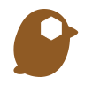

<!doctype html>
<html lang="en">
<head>
<meta charset="utf-8">
<title>Honeyguide logo: comb B refined</title>
<!-- Comparison sheet for the refined comb B ("flower"), written by hand; the SVGs come from gen.py here.
     Open with ?theme=dark and/or ?view=context. favicon.svg follows the OS theme (prefers-color-scheme), so render
     the dark sheet with Chrome's --force-dark-mode (render.sh does). The "x8" column draws the icon into a 16px
     or 18px canvas and scales it up without smoothing, so it shows the pixels a browser actually paints.
     The context view copies the page's .brand rule (src/honeyguide/page/page.css): 18px icon, 16px bold name. -->
<style>
:root{--bg:#F8F7F4;--ink:#24272B;--muted:#66717D;--line:#DDD9D1;--brand:#8F5A24;--amber:#B8862A;color-scheme:light;
  --sans:"Inter",-apple-system,BlinkMacSystemFont,"Segoe UI",Roboto,"Helvetica Neue",Arial,sans-serif;
  --mono:"JetBrains Mono",ui-monospace,"SF Mono",SFMono-Regular,Menlo,Consolas,monospace}
:root.dark{--bg:#171A20;--ink:#F0F1F3;--muted:#A5AAB5;--line:#3A3F49;--brand:#C98348;--amber:#E2C25C;color-scheme:dark}
body{margin:0;background:var(--bg);color:var(--ink);font:13px/1.5 var(--sans);-webkit-font-smoothing:antialiased;padding:22px 26px}
h1{font-size:15px;margin:0 0 12px;font-weight:650}
h2{font-size:11px;text-transform:uppercase;letter-spacing:.1em;color:var(--muted);font-weight:650;margin:20px 0 6px}
table{border-collapse:collapse}
td,th{padding:8px 12px;text-align:center;vertical-align:middle;border-bottom:1px solid var(--line)}
th{font-size:10.5px;text-transform:uppercase;letter-spacing:.08em;color:var(--muted);font-weight:650}
td.lab{text-align:left;font-weight:600;width:190px}
td.lab small{display:block;font-weight:400;color:var(--muted)}
img{display:block;margin:auto}
canvas{display:block;margin:auto;image-rendering:pixelated;background:var(--bg)}
.zz{display:flex;gap:8px;align-items:center;justify-content:center}
.cards{display:flex;gap:16px;flex-wrap:wrap}
.card{width:220px}
.cap{font-size:11px;color:var(--muted);margin:0 0 6px;text-transform:uppercase;letter-spacing:.1em;font-weight:650}
.side{box-sizing:border-box;width:220px;padding:32px 20px 20px 28px;border:1px solid var(--line);border-radius:8px}
.brand{font-weight:700;font-size:16px;letter-spacing:-.02em;display:flex;align-items:center;gap:8px;white-space:nowrap;line-height:1.7}
.brand img,.brand svg{width:18px;height:18px;margin:0;flex:none}
.logo{fill:var(--brand)}
.repo{font:12px var(--mono);color:var(--muted);margin:2px 0 8px 26px}
.tabs{display:flex;align-items:flex-end;gap:2px;background:var(--line);padding:8px 8px 0;border-radius:8px 8px 0 0;width:max-content}
.tab{display:flex;align-items:center;gap:8px;width:190px;height:34px;padding:0 12px;box-sizing:border-box;border-radius:8px 8px 0 0;font:12px var(--sans);color:var(--muted)}
.tab.on{background:var(--bg);color:var(--ink)}
.tab img{width:16px;height:16px;margin:0}
.lock{display:flex;gap:40px;align-items:center}
</style>
</head>
<body>
<div id="out"></div>
<script>
const q=new URLSearchParams(location.search), dark=q.get("theme")==="dark";
if(dark) document.documentElement.classList.add("dark");
const s=dark?"-dark":"";
const B={icon:"../b/icon"+s+".svg",fav:"../b/favicon.svg",logo:"../b/logo"+s+".svg"};
const R={icon:"icon"+s+".svg",small:"icon-small"+s+".svg",fav:"favicon.svg",logo:"logo"+s+".svg"};
const im=(src,n)=>``;
const zoom=(src,n)=>`<canvas data-src="${src}" width="${n}" height="${n}" style="width:${n*6}px;height:${n*6}px"></canvas>`;
const out=document.getElementById("out");
if(q.get("view")==="context"){
  // the refined row inlines page-logo.svg exactly as the page would (fill from var(--brand) / var(--amber))
  let h=`<h1>Sidebar brand row and browser tab (${dark?"dark":"light"}), real size: 18px icon, 16px bold name</h1><div class="cards">`;
  const card=(cap,icon)=>`<div class="card"><div class="cap">${cap}</div><div class="side">
    <div class="brand">${icon}<span>honeyguide</span></div><div class="repo">tinytrain @ 3f9c1e2</div></div></div>`;
  h+=card("B original",``)+card("B refined (inline svg)",`<span id="inl"></span>`)+
     card("Bird (before)",``);
  h+=`</div><h2>Browser tabs, favicon at 16px</h2><div class="tabs">
    <div class="tab on">Honeyguide · tinytrain</div>
    <div class="tab">Honeyguide · other map</div>
    <div class="tab">B original favicon</div>
    <div class="tab">Bird favicon (before)</div></div>`;
  out.innerHTML=h;
  fetch("page-logo.svg").then(r=>r.text()).then(t=>{document.getElementById("inl").outerHTML=t;})
    .catch(()=>{document.getElementById("inl").outerHTML=``;document.title="FALLBACK";});
}else{
  let h=`<h1>Comb B (flower): original and refined (${dark?"dark":"light"})</h1>
    <table><tr><th></th><th>96px</th><th>48px</th><th>32px</th><th>18px</th><th>16px</th><th>18 / 16 px, ×6</th><th>favicon 16px</th></tr>`;
  const row=(lab,sub,big,mid,sm,fav)=>`<tr><td class="lab">${lab}<small>${sub}</small></td><td>${im(big,96)}</td><td>${im(big,48)}</td>`+
    `<td>${im(mid,32)}</td><td>${im(sm,18)}</td><td>${im(sm,16)}</td><td><div class="zz">${zoom(sm,18)}${zoom(sm,16)}</div></td>`+
    `<td>${fav?im(fav,16):""}</td></tr>`;
  h+=row("B original","one outline drawing at every size; favicon was a different drawing",B.icon,B.icon,B.icon,B.fav);
  h+=row("B refined","large drawing at 48px and up; small drawing at 32px and below (icon-small, favicon)",R.icon,R.small,R.small,R.fav);
  h+=row("Refined small drawing","icon-small, favicon and the page's inline logo, shown large to read the shapes",R.small,R.small,R.small);
  h+=row("Small, rejected: lit cells","the old favicon: route as three amber cells; no trail, no dot","alt/lit"+s+".svg","alt/lit"+s+".svg","alt/lit"+s+".svg");
  h+=row("Small, rejected: carved","all cells filled, trail cut through them; slivers at 16px","alt/carved"+s+".svg","alt/carved"+s+".svg","alt/carved"+s+".svg");
  h+=row("Small, rejected: outline","the refined large drawing shrunk","alt/outline"+s+".svg","alt/outline"+s+".svg","alt/outline"+s+".svg");
  h+=`</table><h2>Lockup (40px tall): original, refined</h2><div class="lock">
    </div>
    <h2>Favicon in a tab strip, actual 16px</h2><div class="tabs">
    <div class="tab on">Honeyguide · tinytrain</div>
    <div class="tab">Honeyguide · inactive</div>
    <div class="tab">B original favicon</div></div>`;
  out.innerHTML=h;
  for(const c of document.querySelectorAll("canvas")){
    const i=new Image(); i.onload=()=>{const x=c.getContext("2d");x.fillStyle=getComputedStyle(document.body).backgroundColor;
      x.fillRect(0,0,c.width,c.height);x.drawImage(i,0,0,c.width,c.height);}; i.src=c.dataset.src;}
}
</script>
</body>
</html>
